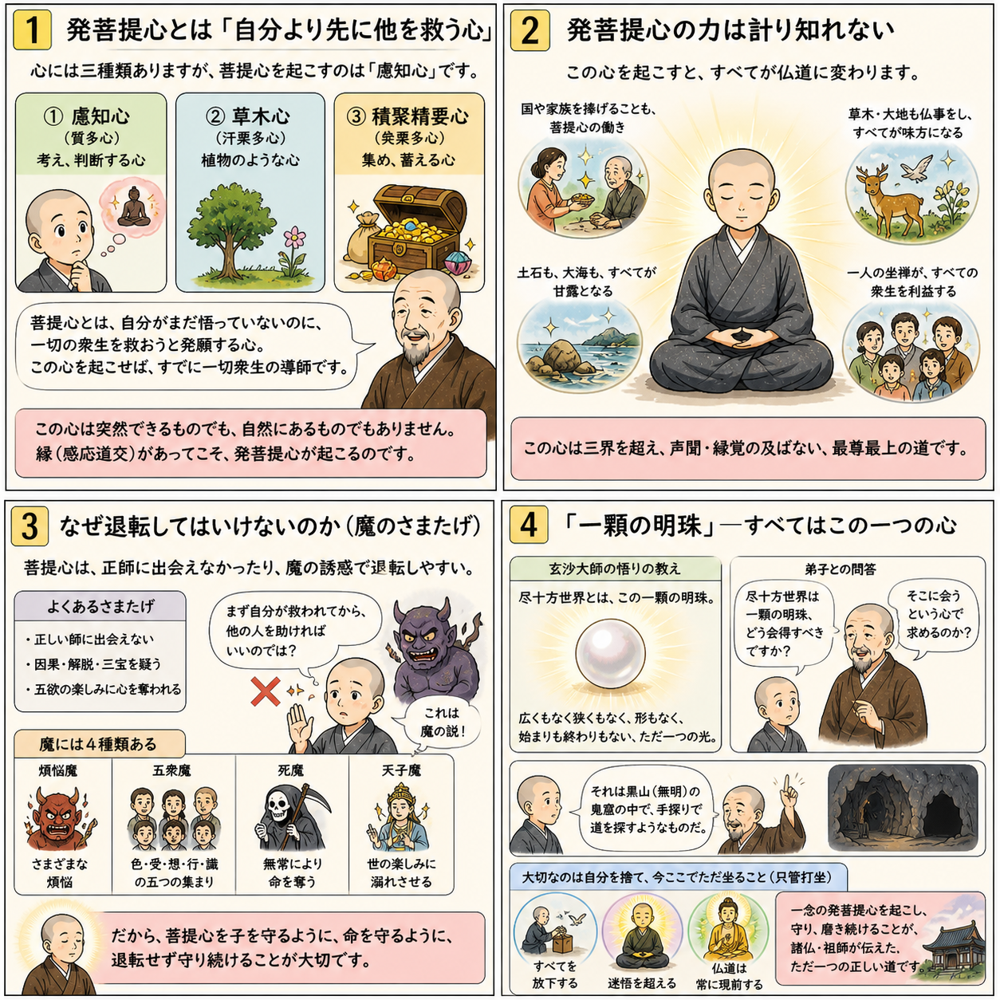

七十五巻 巻一覧
正法眼藏第7 一顆明珠
本ページは各巻の紹介ページです。tools/gen_web_volumes.py が doc/正法眼蔵.txt から要点の短い抜粋を載せています（全文の引用ではありません）。
出典（原文）: https://shomonji.or.jp/zazen/doc/genzou.html
原文・現代語訳の全文は 全文ページを参照してください。
この巻の紹介（概要）
道元『正法眼蔵』七十五巻の第7篇「一顆明珠」です。禅籍・経典への引用や語の行間が重なりやすいので、一度ですべてを要約に還元しない読み方を推奨します。問答 Bot では巻スコープにこの題名を含めると応答が安定しやすいことがあります。
語彙の足場
- 題名語：巻題「一顆明珠」は、道元が本章で特に扱う論点の看板です。辞書義だけに固定せず、原文中の用例で意味を確かめます。
- 引用と典故：公案・経文の引用は、一字一句の照応（何に答えているか）を押さえると全体が見えやすくなります。
- 学び方：抜粋だけでも音読し、分からない箇所は印を付けて後から問うとよいです。
原文（要点の抜粋）
当巻の冒頭付近からの短い抜粋です。長い引用は載せていません。全文は全文ページを参照してください。出典はリポジトリ内 doc/正法眼蔵.txt です。原文の参照元: https://shomonji.or.jp/zazen/doc/genzou.html
裟婆世界大宋國、福州玄沙山院宗一大師、法諱師備、俗姓者謝なり。在家のそのかみ釣魚を愛し、舟を南臺江にうかべて、もろもろのつり人にならひけり。不釣自上の金鱗を不待にもありけん。唐の咸通のはじめ、たちまちに出塵をねがふ。舟をすてて山にいる。そのとし三十歳になりけり。浮世のあやうきをさとり、佛道の高貴をしりぬ。つひに雪峰山にのぼりて、眞覺大師に參じて、晝夜に辨道す。
あるときあまねく諸方を參徹せんため、囊をたづさへて出嶺するちなみに、脚指を石に築著して、流血し、痛楚するに、忽然として猛省していはく、是身非有、痛自何來（是の身有に非ず、痛み何れよりか來れる）。
すなはち雪峰にかへる。
雪峰とふ、那箇是備頭陀（那箇か是れ備頭陀）。
玄沙いはく、終不敢誑於人（終に敢へて人を誑かさず）。
このことばを雪峰ことに愛していはく、たれかこのことばをもたざらん、たれかこのことばを道得せん。
雪峰さらにとふ、備頭陀なんぞ徧參せざる。
師いはく、達磨不來東土、二祖不往西天（達磨東土に來らず、二祖西天に往かず）といふに、雪峰ことにほめき。
ひごろはつりする人にてあれば、もろもろの經書、ゆめにもかつていまだ見ざりけれども、こころざしのあさからぬをさきとすれば、かたへにこゆる志氣あらはれけり。雪峰も、衆のなかにすぐれたりとおもひて、門下の角立なりとほめき。ころもはぬのをもちゐ、ひとつをかへざりければ、ももつづりにつづれけり。はだへには紙衣をもちゐけり、艾草をもきけり。雪峰に參ずるほかは、自餘の知識をとぶらはざりけり。しかあれども、まさに師の法を嗣するちから、辨取せりき。
つひにみちをえてのち、人にしめすにいはく、盡十方世界、是一顆明珠。
ときに僧問、承和尚有言、盡十方世界是一顆明珠。學人如何會得（承るに和尚言へること有り、盡十方世界は是れ一顆の明珠と。學人如何が會得せん）。
師曰、盡十方世界是一顆明珠、用會作麼（盡十方世界は是れ一顆の明珠、會を用ゐて作麼）。
図解（4コマ・AI生成）
教義の根拠は原文・出典に従い、漫画は比喩の補助に留めてください。

深掘り（読解のコツ）
- 道元文は定義の羅列に見えても、多くの場合誤解への遮断と正伝の姿勢が背骨になっています。
- 「当体」「現成」「即」などの語が出たら、その巻独自の差別相にどう接続しているかをメモしておくとよいです。